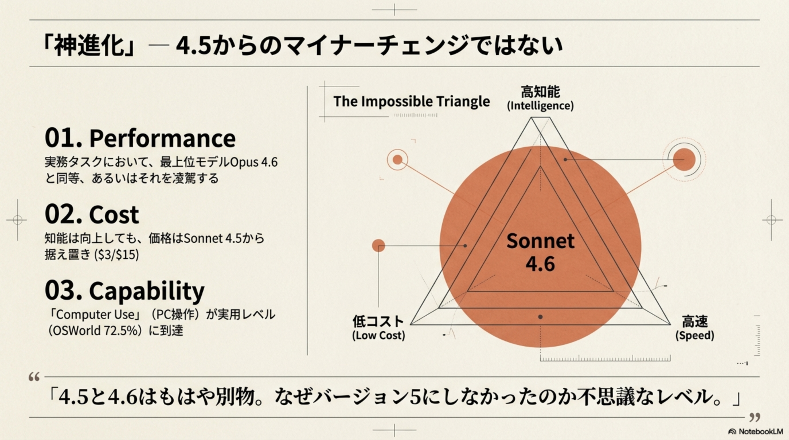
Opus級の性能
実務タスクにおいて、最上位モデルOpus 4.6と同等、あるいはそれを凌駕する
据え置き価格
知能は向上しても、価格はSonnet 4.5から据え置き（$3/$15）
Computer Use実用化
「Computer Use」（PC操作）が実用レベルに到達（OSWorld 72.5%）
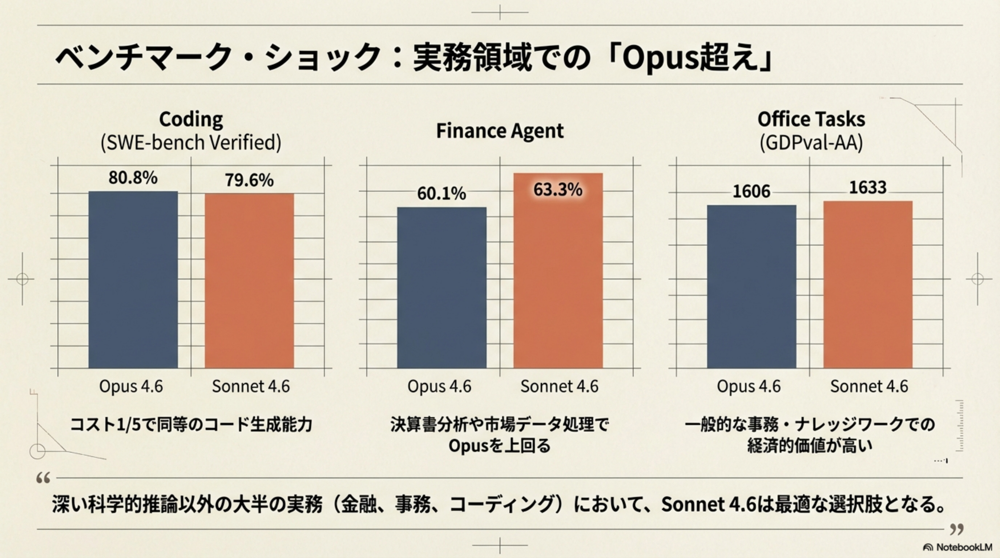
Coding (SWE-bench Verified)
Finance Agent（金融分析）
Office Tasks (GDPval-AA)
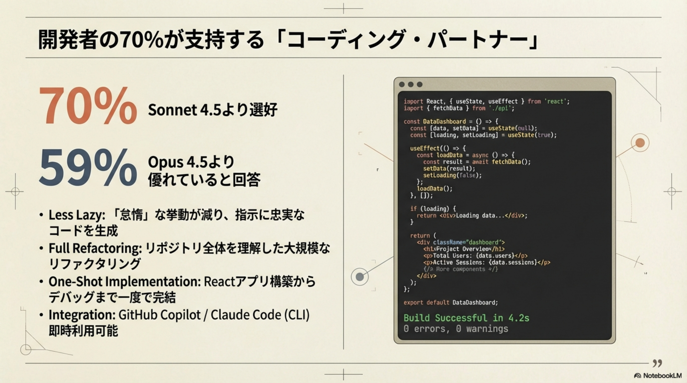
優れていると回答
- Less Lazy: 「怠惰」な挙動が減り、指示に忠実なコードを生成
- Full Refactoring: リポジトリ全体を理解した大規模なリファクタリング
- One-Shot Implementation: Reactアプリ構築からデバッグまで一度で完結
- Integration: GitHub Copilot / Claude Code (CLI) 即時利用可能
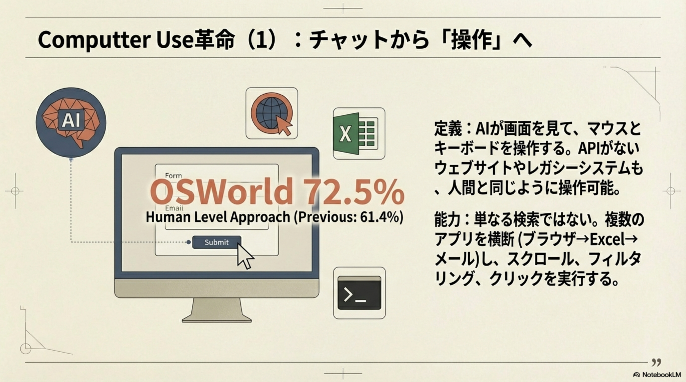
AIが画面を見て、マウスとキーボードを操作する。APIがないウェブサイトやレガシーシステムも、人間と同じように操作可能。
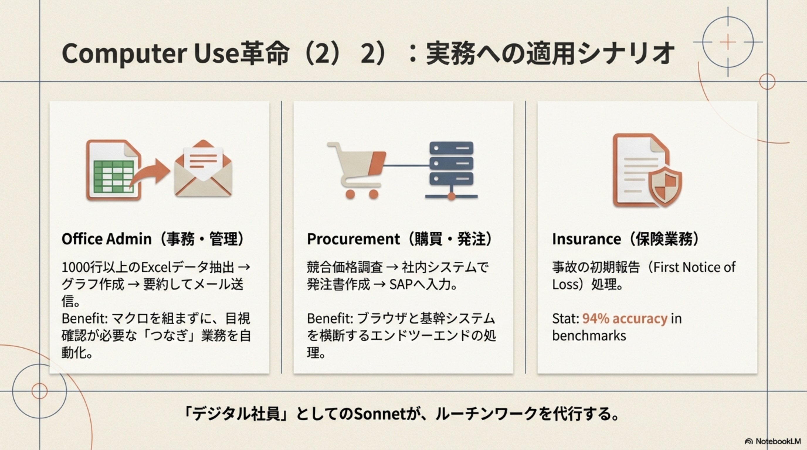
Office Admin（事務・管理）
1000行以上のExcelデータ抽出 → グラフ作成 → 要約してメール送信。マクロを組まずに、目視確認が必要な「つなぎ」業務を自動化。
Procurement（購買・発注）
競合価格調査 → 社内システムで発注書作成 → SAPへ入力。ブラウザと基幹システムを横断するエンドツーエンドの処理。
Insurance（保険業務）
事故の初期報告（First Notice of Loss）処理。
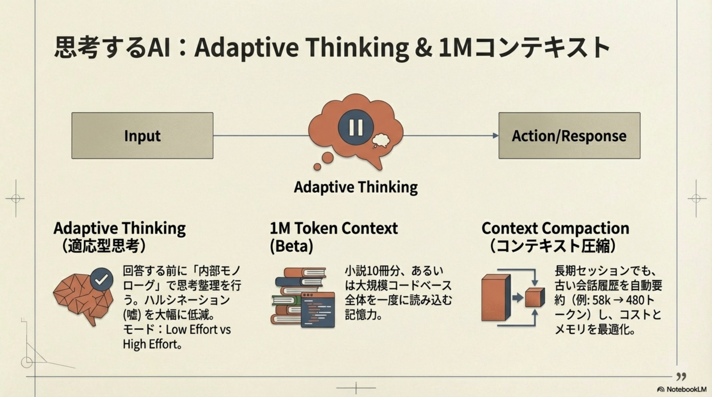
Adaptive Thinking（適応型思考）
回答する前に「内部モノローグ」で思考整理を行い、ハルシネーション（嘘）を大幅に低減。タスクの難易度に応じてLow Effort / High Effortを自律的に調整。
1M Token Context（ベータ）
小説約10冊分、あるいは大規模コードベース全体を一度に読み込む記憶力。長文ドキュメント分析や巨大リポジトリの理解に威力を発揮。
Context Compaction（コンテキスト圧縮）
長期セッションでも、古い会話履歴を自動要約（例: 58k → 480トークン）し、コストとメモリを最適化。セッションが途切れない。
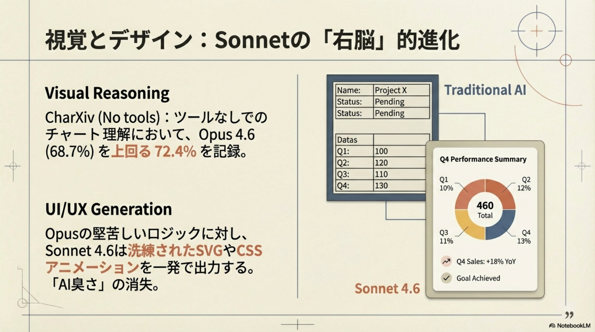
Visual Reasoning
CharXiv（ツールなしでのチャート理解）において、72.4% を記録。Opus 4.6（68.7%）を上回る視覚認識力。
UI/UX Generation
Opusの堅苦しいロジックに対し、Sonnet 4.6は洗練されたSVGやCSSアニメーションを一発で出力。「AI臭さ」の消失。
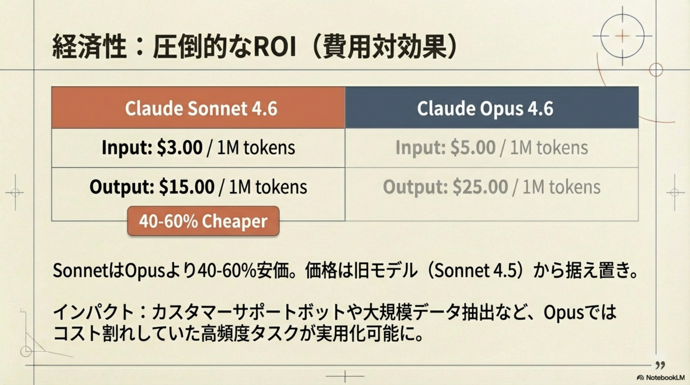
Claude Sonnet 4.6
Claude Opus 4.6
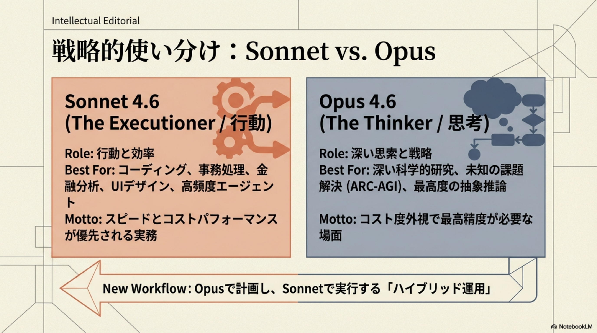
Sonnet 4.6 — The Executioner（行動）
Best For: コーディング、事務処理、金融分析、UIデザイン、高頻度エージェント
Motto: スピードとコストパフォーマンスが優先される実務
Opus 4.6 — The Thinker（思考）
Best For: 深い科学的研究、未知の課題解決 (ARC-AGI)、最高度の抽象推論
Motto: コスト度外視で最高精度が必要な場面
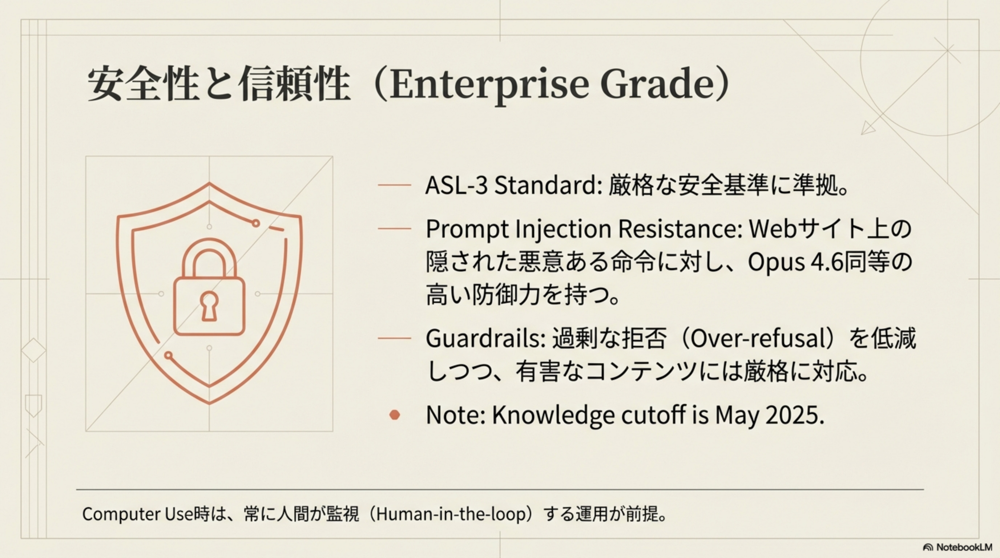
🛡️ ASL-3 Standard
Anthropicの厳格な安全基準に準拠。エンタープライズグレードのセキュリティ。
🔒 Prompt Injection Resistance
Webサイト上の隠された悪意ある命令に対し、Opus 4.6同等の高い防御力を持つ。
⚖️ Guardrails
過剰な拒否（Over-refusal）を低減しつつ、有害なコンテンツには厳格に対応。
👁️ Human-in-the-Loop
Computer Use時は、常に人間が監視する運用が前提。Dockerコンテナでの隔離実行を推奨。
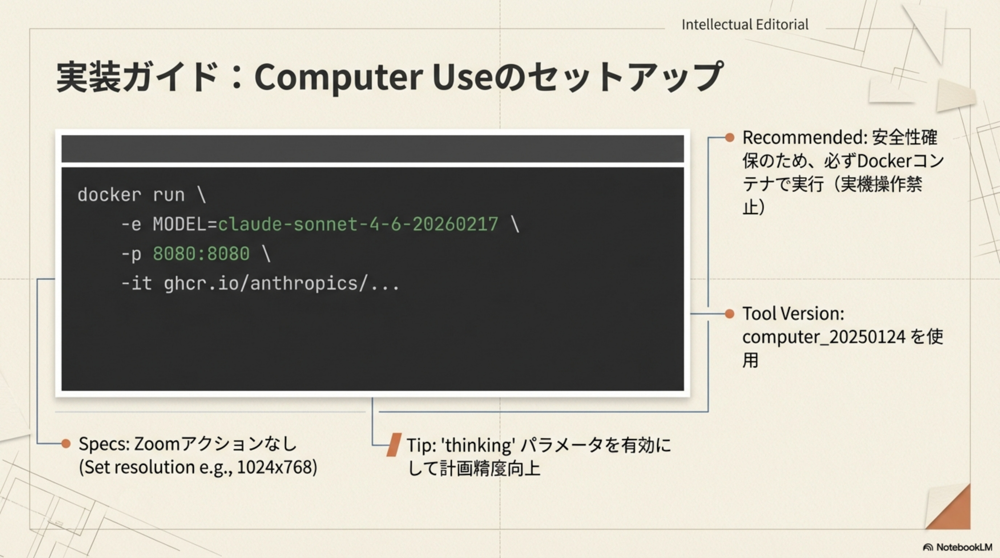
-e MODEL=claude-sonnet-4-6-20260217 \
-p 8080:8080 \
-it ghcr.io/anthropics/...
🐳 Docker推奨
安全性確保のため、必ずDockerコンテナで実行（実機操作禁止）
🖥️ 解像度設定
Zoomアクションなし。Set resolution e.g., 1024x768
💡 Thinkingパラメータ
'thinking' パラメータを有効にして計画精度向上
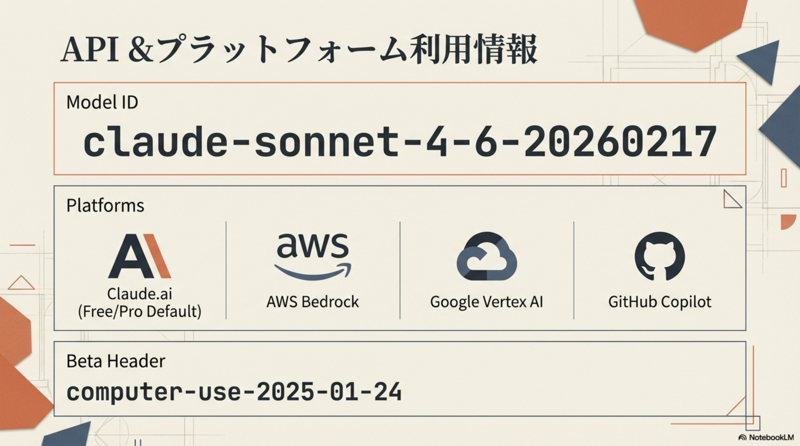
computer-use-2025-01-24
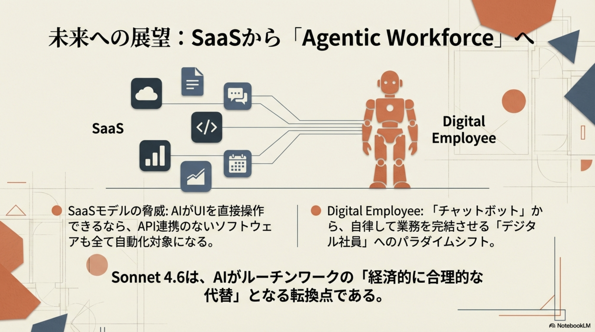
SaaSモデルの脅威
AIがUIを直接操作できるなら、API連携のないソフトウェアも全て自動化対象になる。既存SaaS企業は「操作不要」の世界に適応する必要がある。
Digital Employee
「チャットボット」から、自律して業務を完結させる「デジタル社員」へのパラダイムシフト。人間は監督・判断に集中。
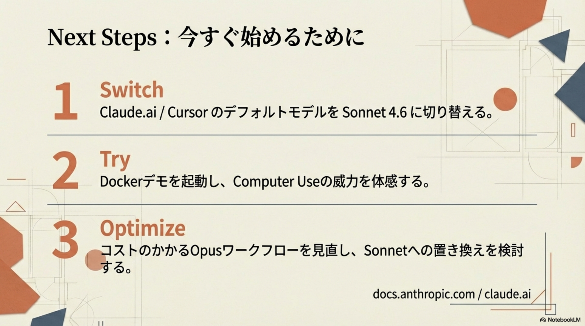
Switch
Claude.ai / Cursor のデフォルトモデルを Sonnet 4.6 に切り替える。無料プランでもデフォルトに設定済み。
Try
Dockerデモを起動し、Computer Useの威力を体感する。OSWorld 72.5%の操作精度を自分の業務で検証。
Optimize
コストのかかるOpusワークフローを見直し、Sonnetへの置き換えを検討する。金融・事務・UIデザインでOpus超えの性能。